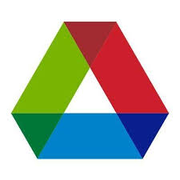

Jason Lang
Researcher and engineer, with a focus on applying techniques from
machine learning and optimization to solve difficult decision and
automation problems. In my free time I enjoy hiking, rock climbing, and snowboarding.
Based in Alexandria, VA, 🇺🇸.
Personal: jdenalil 📧 gmail.com
Work: jason.lang 📧 heronsystems.com

Recent Work History
Heron Sytems R&D
Machine Learning Engineer (July '21 —)
Incoming Machine Learning Engineer, starting summer 2021.
Heron Sytems R&D
Machine Learning Intern (December '19 — January '21)
I work in the Machine Learning group at Heron Systems on various DARPA research contracts.
We build deep learning systems for real-world autonomy and data analysis. We are also the
authors of the open source reinforcement learning framework AdeptRL.
Specific projects and contributions are listed below:
- DARPA Alpha Dogfight Trials (December '19 — August '20)
- Competitive effort between eight companies to develop the best agent in a simulated 1v1 F-16 Dogfighting scenario.
- Used deep reinforcement learning combined with league play, winning 1st place in every stage of the competition.
- Implemented the transformer agent architecture as a more effective way to represent long term dependencies in RL agents.
- DARPA Gamebreaker (May '20 —)
- Developed systematic methods to find perturbations that unbalance combat scenarios in Starcraft 2.
- Created deep learning systems to dynamically assign win probabilities to game scenarios.
- Created search algorithms to find perturbations that unbalance game scenarios.
- Gave presentations to DARPA program managers on project progress.
- DARPA Air Combat Evolution (October '20 —)
- Further developing reinforcement learning for man-machine teaming while scaling autonomous agents from subscale drones to full scale jets.
- DARPA Joint All-Domain Warfighting Software (December '20 —)
- Upcoming program developing predictive analytics in NGTS for battle management.
 Argonne National Lab
Research Intern (June '19 — August '19)
Worked at the Advanced Photon Source creating automated beamline systems for the XSD-SRS Group.
 Whitetail Resort
Whitetail Resort
Snowboard Instructor (December '13 — May '19)
Taught snowboarding throughout high school and college.
Education
Virginia Tech
B.S. Mechanical Engineering, Math Minor (August '17 — May '21)
GPA: 3.45
Projects
Senior Design: Future Automated Mobility
Autonomy Lead (August '20 — May '21)
Designing an autonomous transportation solution for the cities of the future. Using Python and ROS to transform radar and camera inputs into actionable driving decisions.
Orbital Launch Vehicle Team
Trajectory and Analysis Member (August '19 — May '20)
Modeled the trajectory of sounding rocket Hokie 0.75 using ASTOS and custom computational modeling tools.
Hokie 0.75 will attempt to become the second collegiate-built rocket to reach space in 2021.